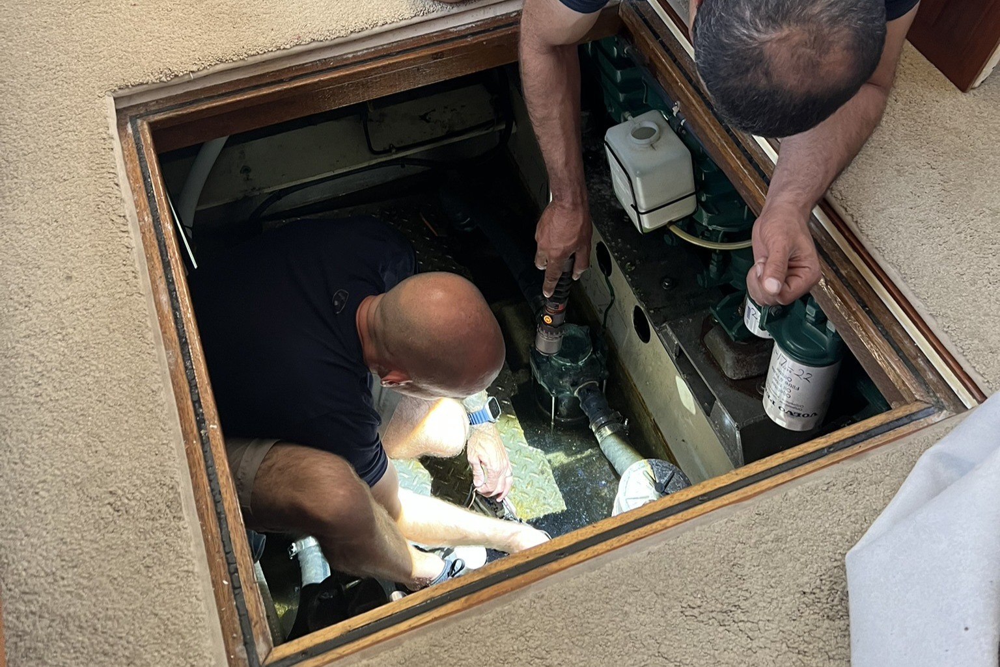
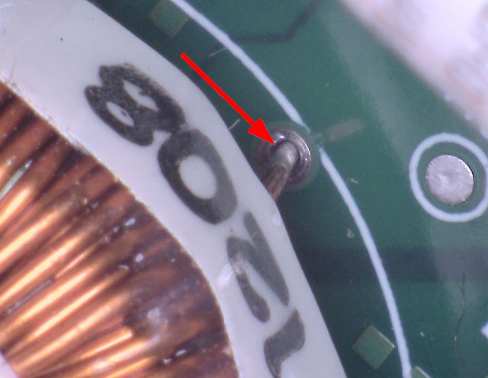
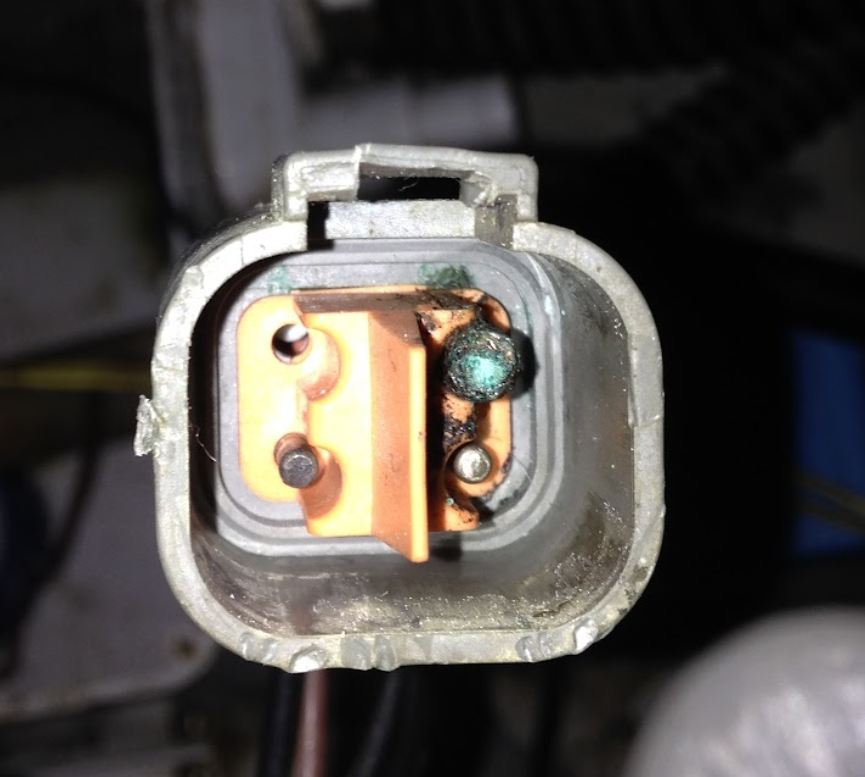

Services
Marine electrical troubleshooting, diagnostics, and corrective work for sailboats and powerboats.
What I Work On
Electrical Troubleshooting
Intermittent faults, dead circuits, breaker trips, voltage drop, parasitic drain, and corrosion failures.
Charging & Battery Systems
Alternators, regulators, shore chargers, DC-DC charging, and battery bank performance verification.
Lithium Battery Conversions
LiFePO4 system design, BMS integration, alternator protection, and conversion from lead-acid.
Shore Power & AC Systems
Inlet and distribution faults, GFCI and galvanic protection verification, grounding and bonding.
Stray Current & Corrosion
Hull potential measurement, stray current testing, galvanic isolator verification, and bonding evaluation.
Thermal Imaging
Infrared inspection of panels, connections, and wiring under load to identify hot spots and failing terminations.
NMEA 2000 & Electronics
Backbone faults, terminations, device dropouts, and network voltage verification.
Bilge & Critical Circuits
Bilge pumps, float switches, alarms, auto/manual logic, and corrective wiring.
Wiring & Documentation
Circuit tracing, labeling, termination upgrades, routing improvements, and correction of unsafe modifications.
System Mapping
Panel circuit index, battery and charging path, shore power path, and annotated photo set — delivered as a PDF.
Communications & Navigation
VHF, AIS, GPS antenna systems, feedline integrity, radio installation, and chartplotter integration.
Solar & Inverter Systems
Solar array integration, MPPT controller setup, inverter installation, and system sizing for liveaboards and offshore passage makers.

Finding What Others Miss
Most electrical problems on boats aren't obvious. They're hidden in connectors, buried in bilges, and invisible until something stops working at the wrong moment.


Rates
Service & Corrective Work hourly
$150 per hour. All work billed at a single hourly rate. No trip fees within the central Bay Area.
ABYC Electrical Safety Inspection flat rate
A focused assessment of your boat's critical electrical systems — shore power, battery state of health, bilge pump circuit, hull potential, and any visible wiring concerns. Includes a written findings summary.
$150 — credited in full toward any work booked within 30 days.
Travel within the central San Francisco Bay Area is included. Extended travel may be billed separately.
All diagnostic and corrective work is performed to ABYC standards — the recognized benchmark for safe marine electrical installation in the United States.